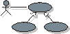

Artifact Overview: Use-Case Model

Click here to see CRS Artifact : |
The Use Case Model is part of
the Rational® Rose™ model
file. To see the current version of the Use Case model note
, expand the Use Case View Package
in the Rose model.
See The Rational Unified Process' Use-Case Model artifact page for details. |
| Tool: | Rational® Rose™ / Microsoft® Word™ |
| Template: | Wylie College has it's own customized RUP framework for Rational Rose model files, follow this link to inspect the framework. |
| Specialization: | No package structure in the Use-Case View. |
| Related artifacts: | |
Reports:
|
|
Use Case Specifications 
The Use Case Specifications are created using Microsoft Word. The Use Case Specification documents are then published to HTML. Click on any of the Use Case names below to read the latest versions of these specifications.
- Maintain Student Information
- Submit Grades
- Select Courses to Teach
- Register for Courses
- Maintain Professor Information
- Login
- Close Registration
- View Report Card
Note :
Some of the elements in the Rational Rose model file is linked to documents outside the model. For these links to work, you must set up a virtual path symbol to point to the home directory of the model file. Follow these steps :
- Open Rational Rose, Select File / Edit Path Map
- In the 'Symbol' field, type 'CRS_HOME' (all upper case)
- In the 'Actual Path' field, type '&' (sets all linked files to be addressed relative to home directory of the model file).
- Click Add and Close
- Open the Course Registration System model file